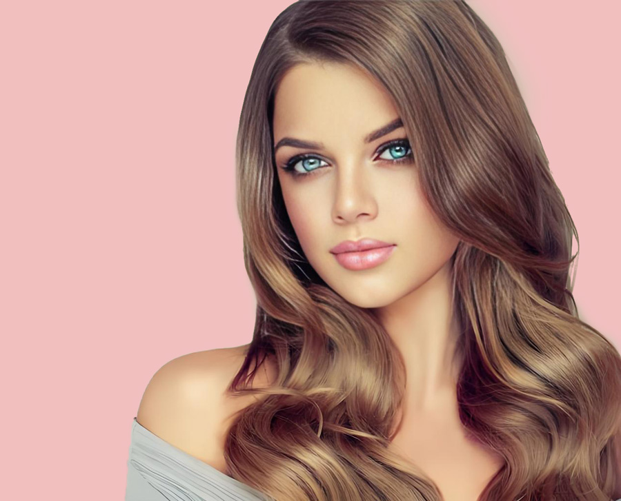

视频教程： https://youtu.be/MEHTrPWAQ7o
视频中使用的素材：点击下载>> | 备用下载>>
操作步骤：
通道抠图准备
Ctrl+N新建图层 → 拖入素材 → 栅格化图层
进入通道面板 → 选择对比度最强的颜色通道（通常为蓝色）→ 复制该通道
头发细节处理
Ctrl+L调出色阶 → 加深头发与背景的对比度
用白色画笔擦除背景 → 黑色画笔强化头发区域
人物主体提取
Ctrl+左键载入选区 → Ctrl+Shift+I反选 → 快速选择工具补充人物主体
返回RGB通道 → 擦除身体多余部分
最终合成
Ctrl+J复制选区 → 新建纯色背景验证抠图效果
注：通道抠图法特别适合处理复杂发丝，关键是通过色阶调整强化头发与背景的明暗对比，再结合画笔工具精细化修饰边缘。
以下是PS抠头发成品效果
